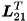
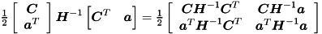
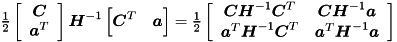

Once projected Hessian is formed we can use Cholesky decomposition ![$\newcommand{\mbm}[1]{\mbox{\boldmath $#1$}} \mbm{S} = \mbm{L}\mbm{L}^T$](form_50.png) . to obtain Langrange multipliers.
. to obtain Langrange multipliers.
![$ \newcommand{\mbm}[1]{\mbox{\boldmath $#1$}}\\ \mbm{L} = \left[ \begin{array}{cccccc} \mbm{L}_{11} & \mbm{0} & \mbm{0} & \dots & \mbm{0} & \mbm{0} \\ \mbm{L}_{21} & \mbm{L}_{22} & \mbm{0} & \dots & \mbm{0} & \mbm{0} \\ \mbm{0} & \mbm{L}_{32} & \mbm{L}_{33} & \dots & \mbm{0} & \mbm{0} \\ \vdots & \vdots & \vdots & \ddots & \vdots & \vdots \\ \mbm{0} & \mbm{0} & \mbm{0} & \dots & \mbm{L}_{N-1,N-1} & \mbm{0} \\ \mbm{0} & \mbm{0} & \mbm{0} & \dots & \mbm{L}_{N,N-1} & \mbm{L}_{NN} \end{array} \right], $](form_51.png)
Directly from observation we have
![$ \newcommand{\mbm}[1]{\mbox{\boldmath $#1$}}\\ \mbm{S}_{11} = \mbm{L}_{11}\mbm{L}_{11}^T, \\ \mbm{S}_{12} = \mbm{S}_{21}^T = \mbm{L}_{11}\mbm{L}_{21}^T, \quad \mbm{L}_{21}^T = \mbm{L}_{11}^{-1}\mbm{S}_{12}, \\ \mbm{S}_{22} = \mbm{L}_{21}\mbm{L}_{21}^T + \mbm{L}_{22}\mbm{L}_{22}^T, \quad \dots $](form_52.png)
In the second step  is computed by forward substitution, and in the third step, forming ![$\newcommand{\mbm}[1]{\mbox{\boldmath $#1$}} \mbm{L}_{22}$](form_54.png) requires the computation of the Cholesky factors of .
requires the computation of the Cholesky factors of .